O que é Club Penguin?
Visão Geral
Club Penguin foi um jogo online massivamente multiplayer (MMO) em que cada jogador controlava um pinguim numa ilha antártica. Lá era possível conversar com outros jogadores, jogar minijogos, decorar o próprio iglu, adotar puffles e participar de eventos temáticos que mudavam a ilha ao longo do ano. Criado para que crianças interagissem de forma segura na internet, o jogo marcou a infância de milhões de pessoas ao redor do mundo.
História
O jogo foi idealizado por Lance Priebe, Lane Merrifield e Dave Krysko, da empresa New Horizon Interactive, e foi lançado em 24 de outubro de 2005. Em 2007, a Disney comprou o jogo, o que expandiu seu público e trouxe mercadorias, spin-offs e até CDs. Por volta de 2015, o crescimento esperado não veio e a empresa começou a reduzir o jogo. Em 29 de março de 2017, os servidores originais foram encerrados, mas a história não terminou ali: os fãs criaram servidores privados para manter a ilha viva.
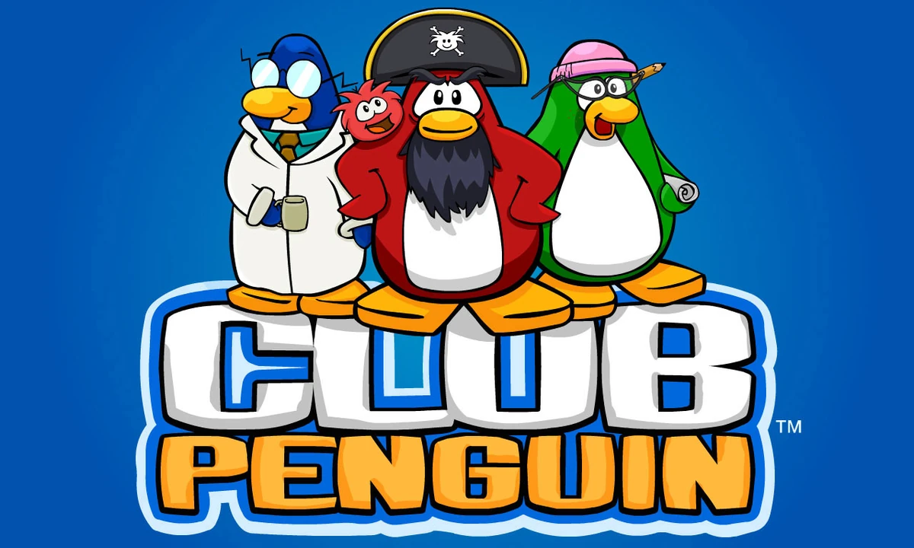
Conheça o jogo
Puffles
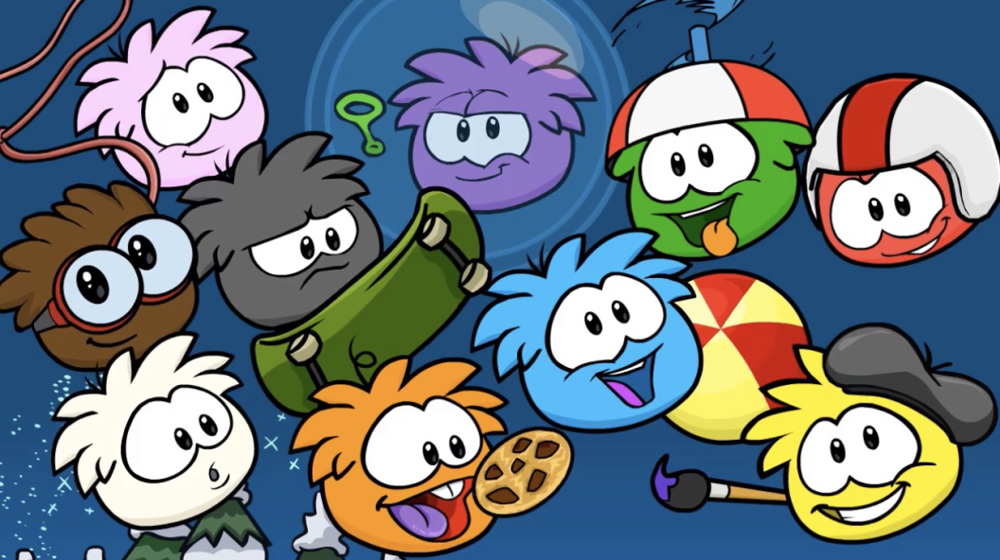
Os puffles eram as criaturas de estimação da ilha. Os jogadores podiam adotá-los em várias cores, dar nome, alimentar, brincar e levá-los para passear. Cada cor tinha uma personalidade própria, e alguns puffles especiais viraram objetos de desejo. Para muita gente, o puffle foi o primeiro "bichinho de estimação virtual" da vida.
- Azul: calmo, leal e sempre pronto para um passeio tranquilo, gosta brincar com sua bola.
- Rosa: ativo e forte, gosta de praticar esportes e principalmente mergulhar
- Preto: muito sério e se mantém isolado, mas vira uma chama sorridente com o molho picante.
- Vermelho: agitado e aventureiro, não consegue ficar parado, é um ótimo surfista.
- Verde: brincalhão e curioso, vive sobrevoando pela ilha com seu chapéu de hélices.
- Roxo: chamativo, adora dança, música e moda, brinca de fazer grandes bolhas.
- Amarelo: animado e criativo, adora pintar quadros e fazer esculturas com qualquer coisa.
- Branco: embora seja tímido e delicado, adora o frio e consegue congelar objetos com seu assopro gelado.
- Laranja: travesso e comilão, sempre aprontando algo com seu carrinho de puxar.
- Marrom: inteligente e engenhoso, participa de muitas invenções na ilha.
Mascotes
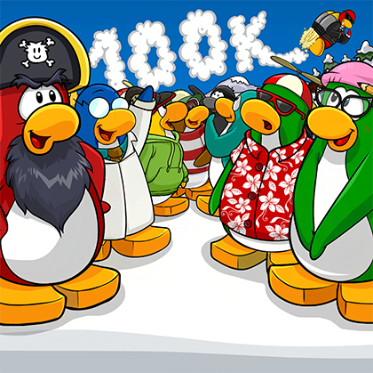
Além dos jogadores, a ilha tinha personagens fixos que davam vida ao jogo, como Tia Ártica, Gary, Rookie e o capitão Rockhopper. Alguns estavam sempre nos mesmos lugares, e outros apareciam só em eventos especiais, o que fazia encontrá-los parecer uma pequena conquista. Eles também conduziam histórias e missões, como as da agência secreta PSA e EPF.
- Rockhopper: capitão pirata do navio Migrator, que visitava a ilha de tempos em tempos com presentes e tesouros.
- Tia Ártica: editora-chefe do Club Penguin Times e, em segredo, diretora da agência secreta.
- Gary: o inventor e cientista da ilha, sempre com um novo aparelho na manga.
- Rookie: agente atrapalhado e animado, mas muito aventureiro e de bom coração.
- Cadence: DJ e cantora, responsável por animar as festas na pista de dança.
- Herbert P. Bear: o urso polar vilão que odeia pinguins e vive tramando contra a ilha.
- Klutzy: caranguejo desastrado, companheiro fiel de Herbert P. Bear.
- Puffle Handler: a cuidadora dos puffles, sempre atenta aos bichinhos.
- Jet Pack Guy: agente de elite sério e focado, famoso pela mochila a jato.
- Sensei: mestre do Card-Jitsu, que conduzia os jogadores pelo caminho ninja.
Minijogos
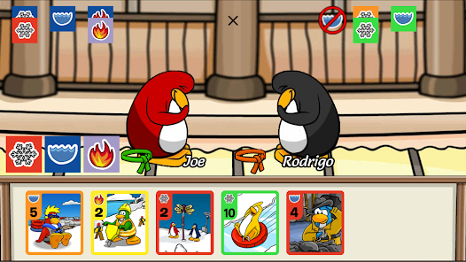
Os minijogos eram a principal forma de ganhar moedas para comprar roupas, puffles e itens para o iglu. Pizzatron, Jet Pack Adventure e Cart Surfer estão entre os mais lembrados. O Card-Jitsu, lançado em 2008, foi um caso à parte: um jogo de cartas com tema ninja que criou toda uma cultura de faixas e rivalidades na ilha.
- Pizzatron 3000: montar pizzas contra o relógio na Pizzaria, um dos jeitos mais comuns de ganhar moedas.
- Jet Pack Adventure: desviar de obstáculos e juntar combustível para voar até o fim, partindo do Farol.
- Cart Surfer: descer a mina num carrinho fazendo manobras sem cair.
- Bean Counters: pegar sacos de café na Cafeteria, fugindo de bigornas, peixes e vasos.
- Card-Jitsu: jogo de cartas ninja no Dojo, com faixas e rivalidades entre jogadores.
- Aqua Grabber: mergulhar no Iceberg para coletar tesouros no fundo do mar.
- Catchin' Waves: surfar na Cova fazendo manobras para somar pontos.
- Puffle Rescue: salvar puffles perdidos nas profundezas da Mina.
- Sled Racing: corrida de trenó na Colina de Esqui.
- Dance Contest: jogo de ritmo no Dance Club, no estilo dos jogos de dança.
Explore a ilha
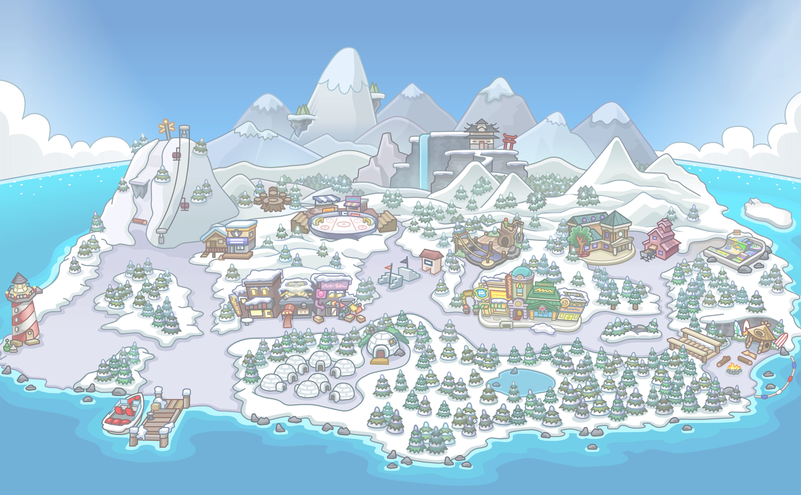
Linha do Tempo
2000
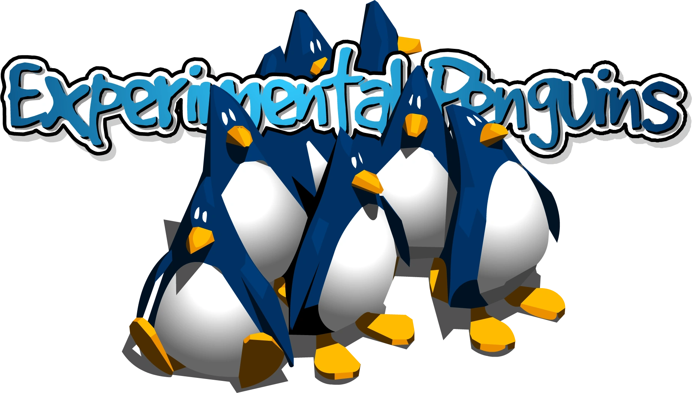
Em 2000, surge Experimental Penguins, um dos primeiros protótipos de jogo multiplayer com pinguins, base do que viria a ser Club Penguin.
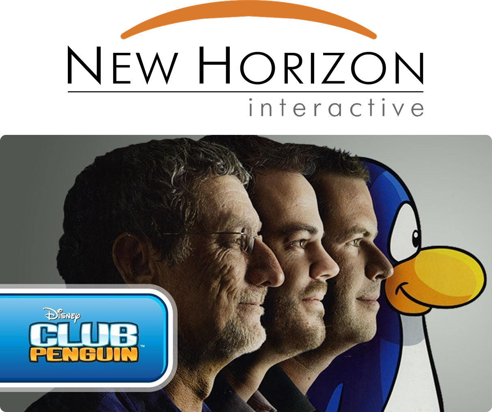
Em outubro de 2005, a New Horizon Interactive lança oficialmente Club Penguin.
2005
2007
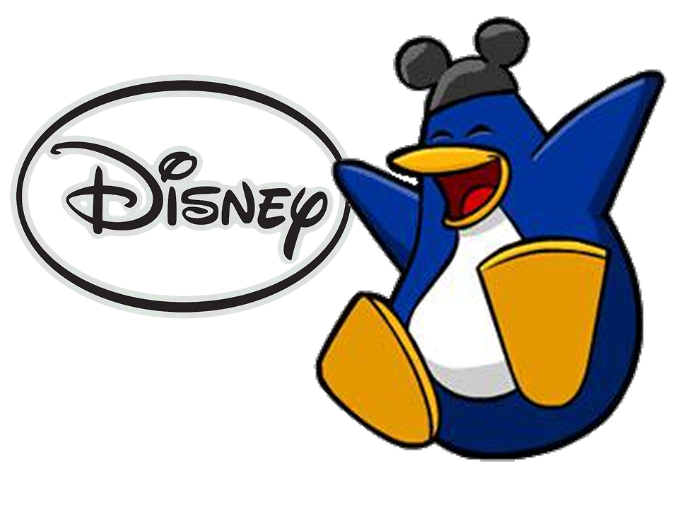
A Disney compra o jogo, que passa a ter mais divulgação, mercadorias e crescimento.
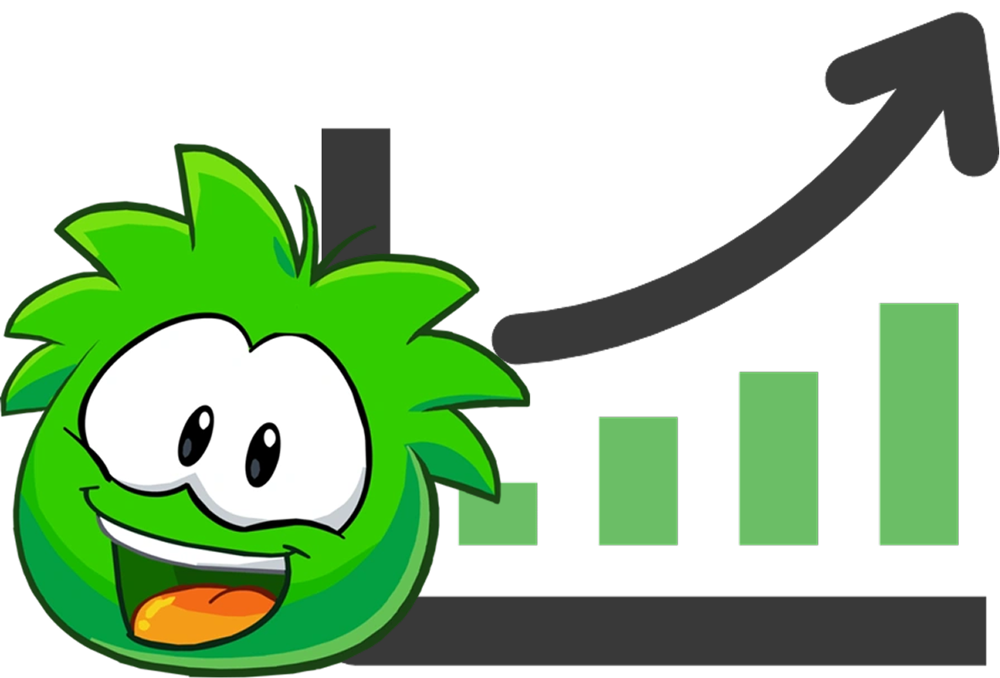
O jogo vive seu auge, com eventos de grande escala como a Operação: Apagão e milhões de jogadores.
2012
2015
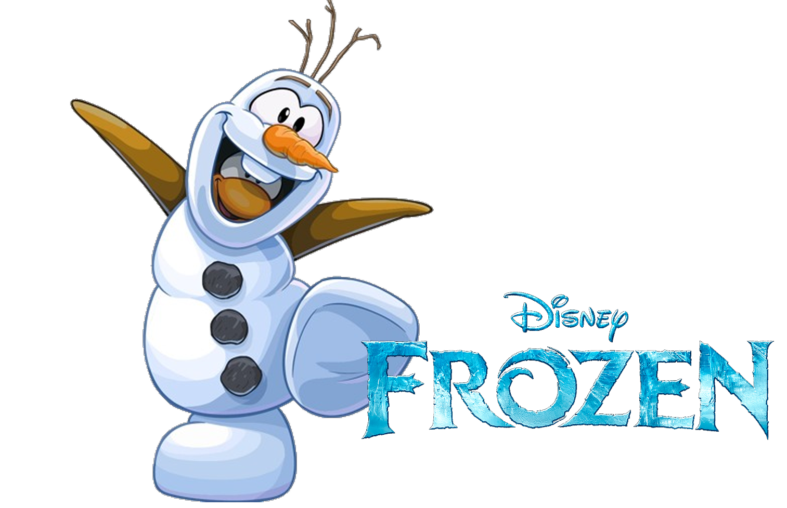
Eventos com franquias da Disney e outros patrocínios aparecem, como Frozen, Star Wars e Monstros S.A., enquanto o jogo começa a perder espaço para a chegada de jogos mobile.
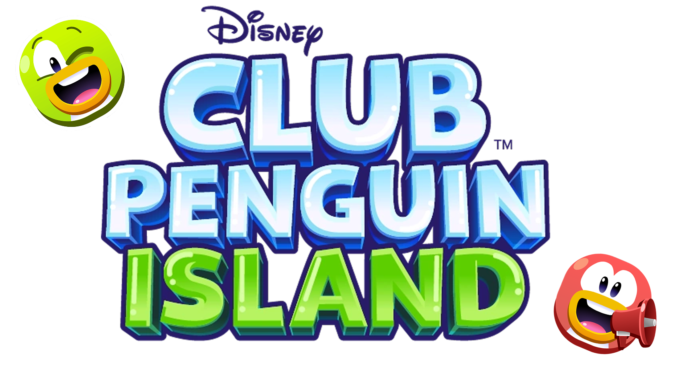
Em março de 2017, os servidores originais fecham com a festa "Waddle On!", e a Disney lança o sucessor 3D Club Penguin Island.
2017
A Comunidade
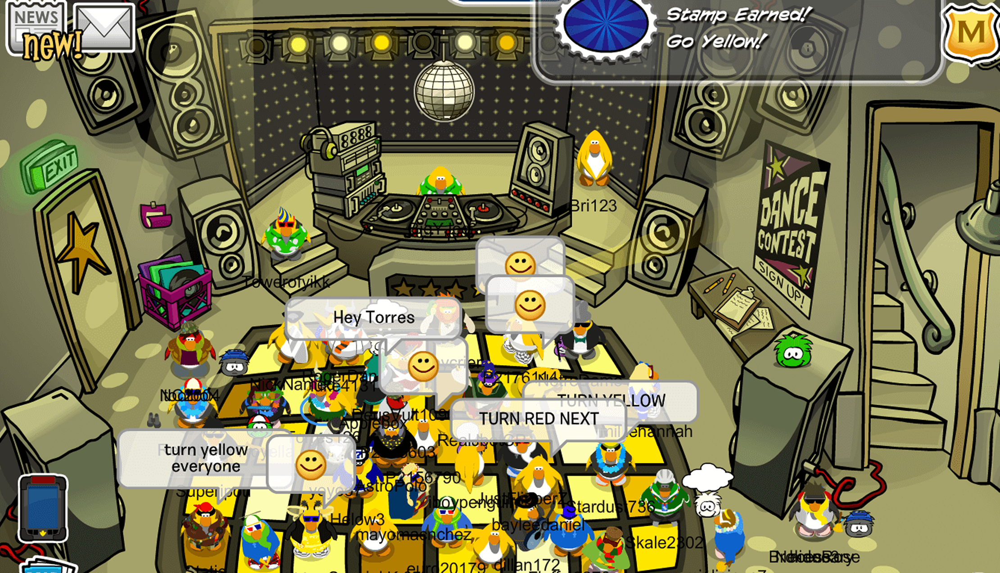
Senso de coletividade
O que fazia Club Penguin especial não eram só os minijogos, mas o que os jogadores faziam uns com os outros. Havia quem passasse horas atrás de selos e, para completar as conquistas mais difíceis, precisava de ajuda: amigos se juntavam, combinavam horários, trocavam dicas e comemoravam cada selo como uma vitória do grupo. Os iglus viravam palco de festas e de jogos caseiros inventados pelos próprios jogadores, com regras, times e até convites espalhados pela ilha. Outros preferiam a moda e organizavam desfiles de roupas, em que cada pinguim mostrava o visual que passou dias montando.
Não havia um canto da ilha em que você entrasse e não encontrasse pelo menos um pinguim por lá. Da Praça ao Dojo, do Dance Club ao Iceberg, sempre havia alguém para conversar, jogar ou simplesmente fazer companhia. E o mais curioso é que quase ninguém ali se conhecia pessoalmente. Mesmo assim, por alguma razão, a comunidade já tinha um senso de coletividade que fazia todos conversarem entre si, e as amizades surgiam com uma facilidade que dava a impressão de que aquele grupo se conhecia há muito tempo.
Conexão intergeracional
Club Penguin começou em 2005 e se encerrou em 2017, um período em que muita coisa mudou na internet, mas a comunidade nunca se dividiu em gerações. Não existiam Millennials ou Geração Z na ilha, apenas pinguins de todas as idades. Um jogador de 8 anos podia fazer amizade com um de 15, e ninguém perguntava quantos anos o outro tinha: o que importava era o que cada um fazia ali, seja um bom minijogo, uma festa de iglu ou um desfile de roupas. A ilha era um espaço em comum, em que as diferenças de idade simplesmente não faziam parte da conversa.
Quando a Disney encerrou o jogo, essa comunidade não se desfez. Parte dela seguiu ativa em servidores privados criados por fãs, que recriaram o funcionamento do jogo para que a ilha continuasse de pé. Assim, a história do Club Penguin continua até hoje no CPJourney, CPLegacy, NewCP, CPZero e em tantos outros servidores não oficiais. Neles, ex-jogadores voltam por nostalgia, encontram antigos amigos e apresentam a ilha para quem nunca a conheceu, como irmãos mais novos, filhos e amigos. Cada servidor mantém viva a mesma ideia que unia a comunidade desde o início: a de que na ilha todos cabem, sem importar de qual época ou geração vieram.
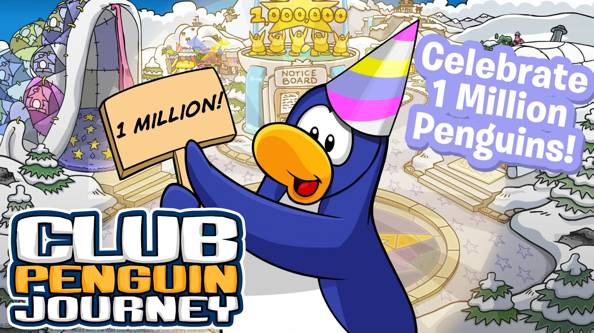
Sobre mim
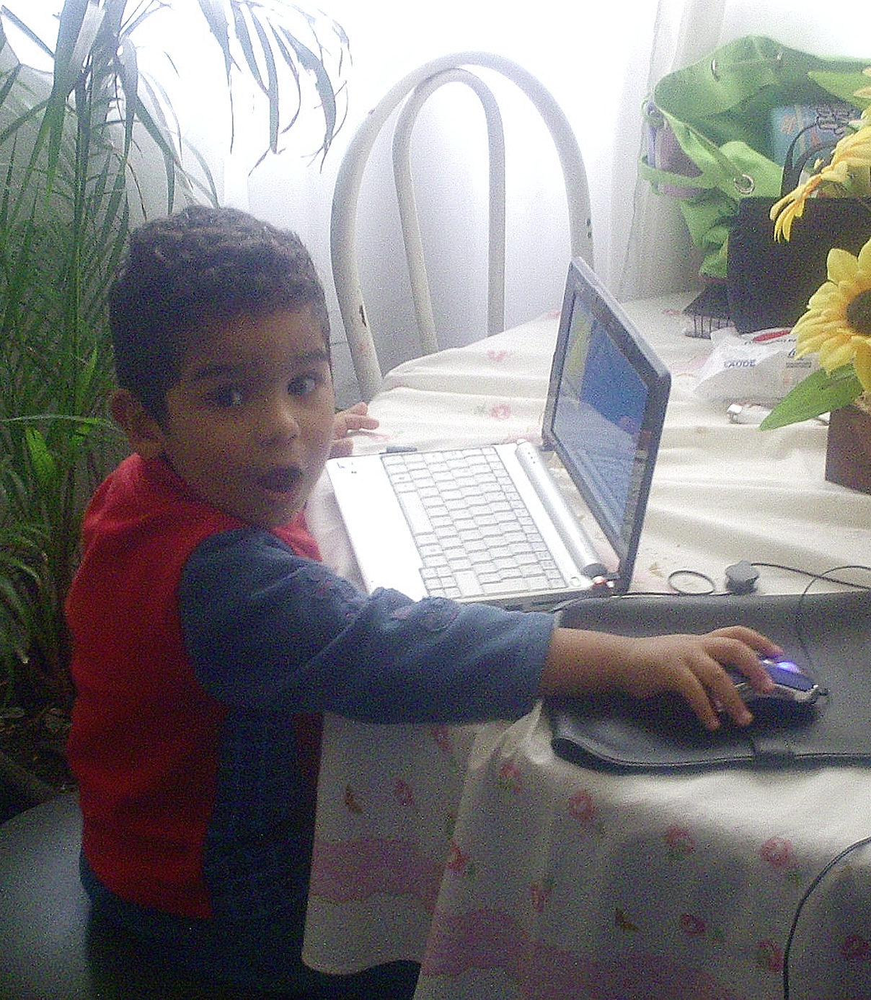
Minha história com Club Penguin
Eu me chamo Brayan Laines Carvalho, e quando fui desafiado a produzir um site que se relacionasse com algo que marcou minha identidade, sabia na hora qual seria o tema do meu projeto.
Eu, tendo 6 anos, conheci o Club Penguin em 2014, quando estava visitando a casa de uma prima mais velha minha, que tinha na época uns 12 anos. Ela me mostrou o seu pinguim rosa com os acessórios que ela comprou na loja e, depois perguntou se eu queria jogar. Eu disse que sim mas, em vez dela deixar eu estragar seu pinguim à minha vontade, ela criou uma conta para mim.
Não me lembro o nome da conta, muito menos a cor da pele do pinguim (que eu costumava variar com frequência), mas o nome de um dos meus Puffles que adotei não me esqueci: Maluquinho, um agitado Puffle laranja que me encontrou vários tesouros enquanto caminhávamos pela ilha.
E hoje?
Embora vocês já saibam que o Club Penguin se encerrou oficialmente em 2017, ele continua muito ativo com uma comunidade nostálgica em diversos servidores privados de fãs. Eu ainda jogo Club Penguin de vez em quando no Club Penguin Journey, o maior CPPS atual, ao lado do meu novo Puffle favorito: Voltinha, uma Puffle da praia que sabe surfar ondas como ninguém.
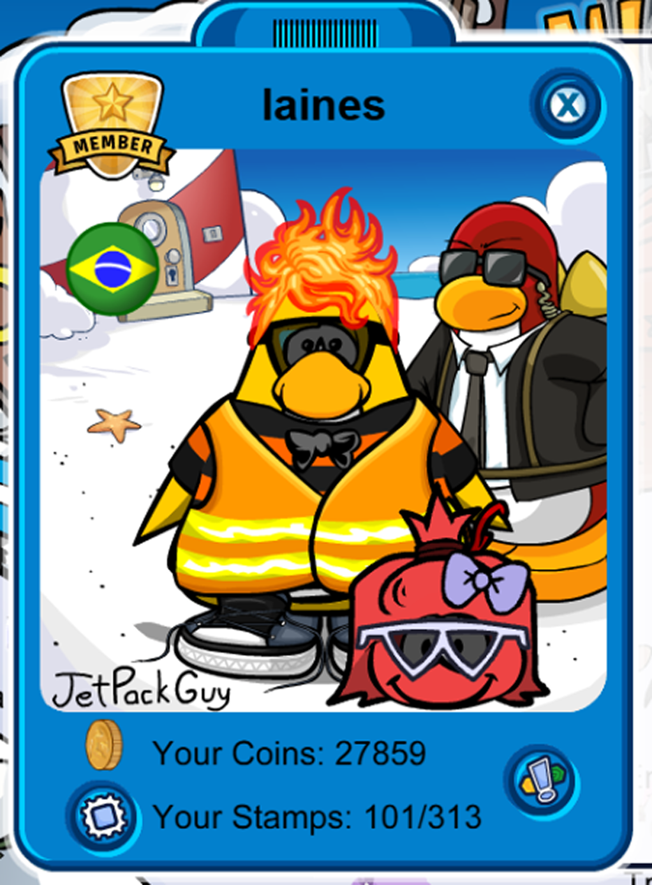